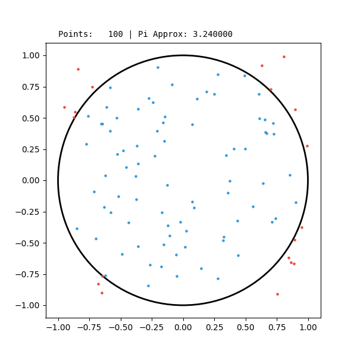
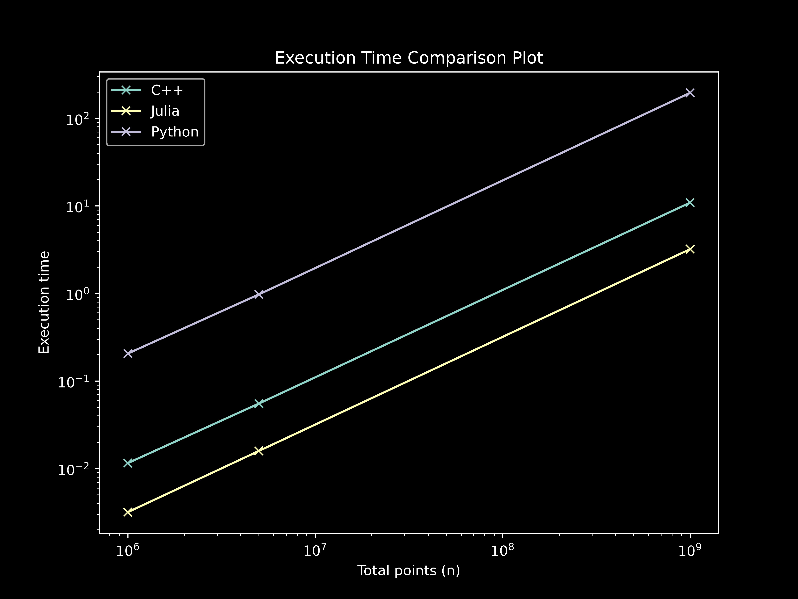
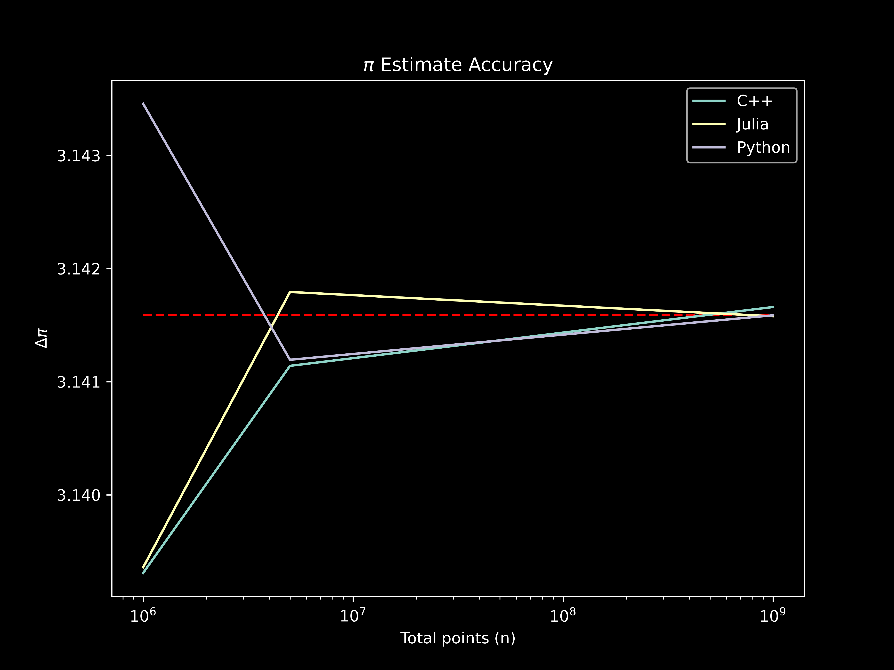

Benchmarking Languages with Monte Carlo (MC) π Approximations
Comparing the run speeds among Python, Julia and C++ by running equivalent code to compute an approximation of π through Monte Carlo algorithm.
My background in coding is starting with C++ in competitive programming courses in middle school, and then switching to Python when I started using code for cosmology projects due to its ease of use and widely used and documented libraries such as numpy, pandas, matplotlib, scipy and astropy. However, this summer, since I have been hearing more and more about this 'new' language called Julia, I decided to also refresh my C++ knowledge. One of the things that I wanted to do is to test the speed of these languages against the same code. Using a Monte Carlo algorithm to estimate the value of $\pi$ is a common test in computer science, since it's easy to code and to scale (example).
Setup
The setup is really simple. Basically, Monte Carlo (MC) algorithms are those processes by which something is computed parting from random values. In this case, the setup is a unit square with a unit circle centered around the centroid of the square. Darts are thrown randomly to this plane (square & circle) and the ratio of darts inside the circle area and the total number of darts (inside the square) is proportional to $\pi$.
$$A_\circ = \frac{1}{4} \pi d^2 = d^2 = A_\square \implies \pi = 4 \frac{A_\circ}{A_\square}$$
The implementation of the code can be accessed in this repository. For the random value generation (coordinates $(x,y)$), the following libraries were used in each language:
| Language | Python (3.14.6) | C++ (clang++ 21.0.0) | Julia (1.12.6) |
|---|---|---|---|
| Random Point Generator | random | random | rand() |
| Time keeping | time | std::chrono::high_resolution_clock | Benchmarktools @btime |
Implementation
All scripts across languages were written following the same structure. After importing the required packages, a function receives $n$ (the number of points to evaluate) as input and outputs the approximation of $\pi$. Then the function is timed using each language's standard tooling.
In the repository, the following files can be found:
- python_mc_pi.py
- julia_mc_pi.jl
- cpp_mc_pi.cpp
- <lang>_log.txt
- execution
- README.md
A script for every language, all following the discussed implementation, and a log file for each language (where the results are saved). The execution file is a shell script used for automatically running all scripts with different inputs.
Before benchmarking, the Python script was run with a virtual environment (uv generated) and with a system-wide Python installation. Both results showed similar execution times, and the differences where negligible considering the absolute values.
Note that for the C++ compilation the `g++ -O3` tag was used for the maximum level of optimisation. For the Julia execution, the script actually runs the function first without the benchmarking to fully compile the function (Julia has just-in-time (JIT) compilation) and then again with the benchmarking tools. These are common practices in these programming languages.
Results

You can see the exact numerical execution times, as well as details of the exact version of each install in the log files available in the repository.
Conclusions
As expected, Python is by far the slower programming language. Apparently, this is due to its compilation strategy. The Python compiler reads and runs the script line by line, these makes it easier to use. While compiled languages like C++ are more 'difficult' to set up and/or use, but are in turn more efficient and faster.
Surprisingly, Julia scored faster execution times than C++ in this benchmark. Both remain in the same order of magnitude, especially compared with Python. For the largest run ($n=10^9$), Julia and C++ took around $3$ and $10$ seconds respectively, while Python took more than 3 minutes ($\sim 190$ seconds).
Bonus: Accuracy
Overall, all languages were similarly accurate for the same sample size, although for the largest $n$ the C++ result was slightly farther from $\pi$ than Julia and Python.

You can consult all mentioned files in this repository. This is my first attempt to a blog-style post on my website. If you have feedback, suggestions or any comments (constructive please), I encourage you to contact me!